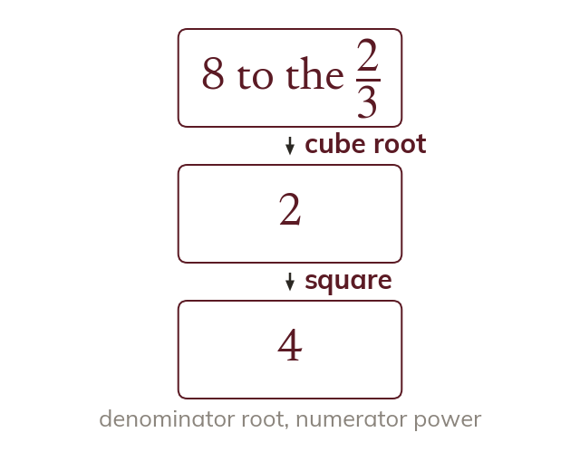

A root and a power
The denominator of the index is a root and the numerator is a power. So 8⁽²³⁾ is the cube root of 8, squared.
In an index mn, the denominator n is a root and the numerator m is a power. So 8⁽²³⁾ is the cube root of 8, which is 2, squared, which is 4.